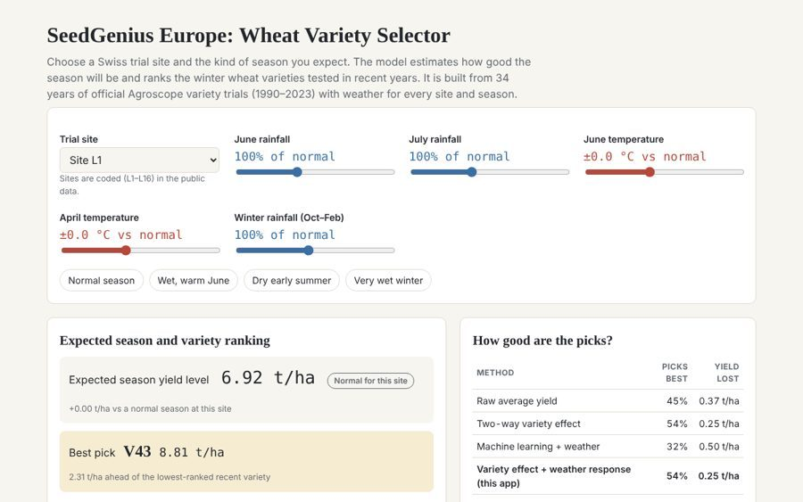
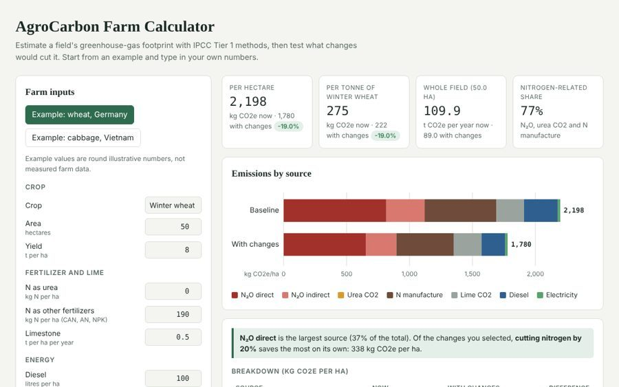

Three interactive web apps that run in your browser. No sign-up or installation needed.
Live app

SeedGenius Europe: Wheat Variety Selector
34 years of Swiss Agroscope winter wheat trials (303 trials, 98 varieties). Pick a site, use the live ECMWF seasonal forecast, and see each variety's chance of being best. Includes DNA-based (12,106 SNP) prediction of yield merit.
Picks the best variety in 54% of unseen seasons, against 45% for raw averages and 32% for machine learning with weather.
Python · genomic prediction · scikit-learn · JavaScript
Live app

AgroCarbon Farm Calculator
Enter a farm's fertilizer, fuel and electricity use to get its greenhouse-gas footprint, then test changes like cutting nitrogen or diesel.
IPCC Tier 1 methods, checked against hand calculations with unit tests.
JavaScript · Python · pytest
Live map

FoodSecurity Atlas
An interactive world map comparing cereal yields, yield trends, harvest volatility and population growth, combined into a transparent risk index.
Covers 176 countries. Africa's median risk is almost twice Europe's.
SQL (SQLite) · Python · Plotly